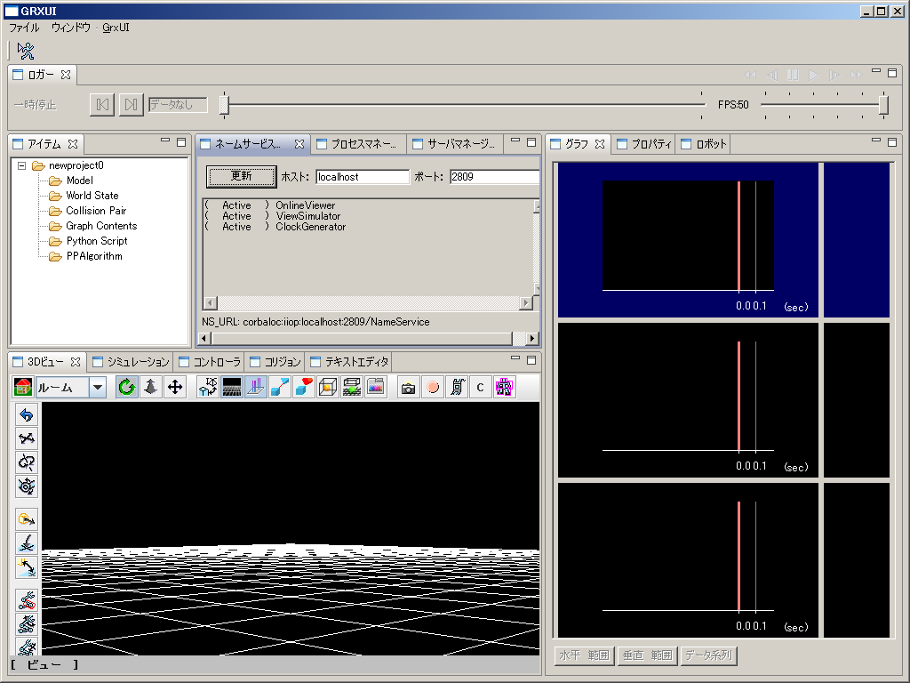

OpenHRPSDK
OpenHRPSDK は、OpenHRP とそれに関連するの実行ファイル等のバイナリを提供します。 必要なソフトウェアOpenHRPSDKには、VS2008(32bit)用、VS2010 32bit用、VS2010 64bit用があります。 これらに合わせて、次のソフトウェアをインストールして下さい。
32bit用のOpenHRPSDKには、64bitOSでも32bit版をインストールして下さい。 コントローラを作成するために以下のソフトウェアが必要です。
または、
Express版は(デフォルトでは)64bitバイナリのビルドができませんのでご注意ください。 また、Jythonスクリプトを使用する場合、以下のソフトウェアも必要です。
インストール前確認Name Serverが正常起動しなくなる恐れがありますので、コンピュータ名を半角８文字以内に設定してください。 詳細についてはこちらをご覧ください。 インストール
ファイル構成インストールすると指定したディレクトリに以下の構成で作成されます。
OpenHRPSDK/ # インストールディレクトリ
+- bin/ # OpenHRPの実行ファイル, omniNames.exe, 実行に必要なDLL
+- etc/ # コントローラ作成に必要な vsprops 設定ファイル
+- GrxUI/ # GrxUI の Eclipse RCP 製品
+- GrxUI.exe # GrxUI起動ファイル
+- include/ # OpenHRP, OpenRTM, OmniORB, 各ライブラリのヘッダ
+- lib/ # OpenHRP, OpenRTM, OmniORB, 各ライブラリのライブラリ
+- License/ # ライセンス文書
+- share/ # サンプルファイル
+- utils/ # RTコンポーネント作成ツール
+- epl-v10.html # Eclipse Public License v1.0 ライセンス文書
+- license-en.txt # ライセンス文書(英語)
+- license-ja.txt # ライセンス文書(日本語)
また、環境変数 OPENHRP_SDK_ROOT が (インストールディレクトリ) の値で追加されます。
サンプルシミュレーションの実行

サーバインストールディレクトリに
まず、SamplePD.xmlを選んでみましょう。左下のビューにロボットが表示されれば読み込み成功です。
ロボットが歩き始めたら成功です。他のサンプルプロジェクトもお試しください。 コントローラ作成
Visual C++ 2008を御使用の場合は、 "%OPENHRP_SDK_ROOT%\utils\rtc-template\rtc-template.py" を使用してコンポーネントのスケルトンを作成してください。 アンインストール[コントロールパネル]の[プログラムの追加と削除]から当プログラムを選択して削除してください。 |